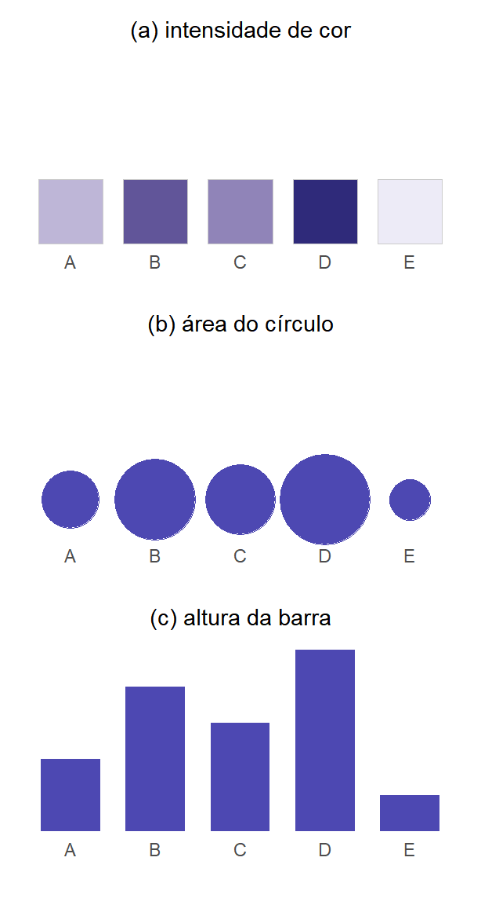
4 Visualização de Dados Tabulares
Nos dois capítulos anteriores aprendemos a resumir dados em números e a organizá-los em tabelas. Este capítulo trata do terceiro movimento da análise exploratória, que é transformar esses dados em imagens. Começaremos discutindo a importância da visualização de dados e quais princípios separam um gráfico eficaz de um gráfico enganoso. Em seguida apresentaremos a Gramática dos Gráficos, o arcabouço teórico que estrutura o pacote ggplot2 que utilizaremos no R. POr fim, percorreremos sistematicamente as possibilidades de representação conforme a quantidade e o tipo das variáveis envolvidas.
Neste capítulo, retomaremos os dois conjuntos de dados do capítulo anterior, escolha_modal.csv e velocidades.xlsx. Faça o download de ambos pelos links abaixo e salve-os em uma pasta onde você irá criar o projeto no RStudio no qual executará esta aula. Assim que salvá-los, crie um novo script do R para iniciarmos o estudo.
4.1 Importância da Visualização de Dados
A Guerra da Crimeia estendeu-se de 1853 a 1856 pela península da Crimeia, no mar Negro, pelo Cáucaso e pelos Bálcãs. De um lado estava o Império Russo, e do outro uma coligação formada por Império Otomano, Reino Unido, França e Reino da Sardenha, reunida em reação às pretensões expansionistas da Rússia. Em outubro de 1854, a enfermeira britânica Florence Nightingale foi enviada com uma equipe de voluntárias ao hospital militar de Scutari, na Turquia, para cuidar dos feridos do conflito.
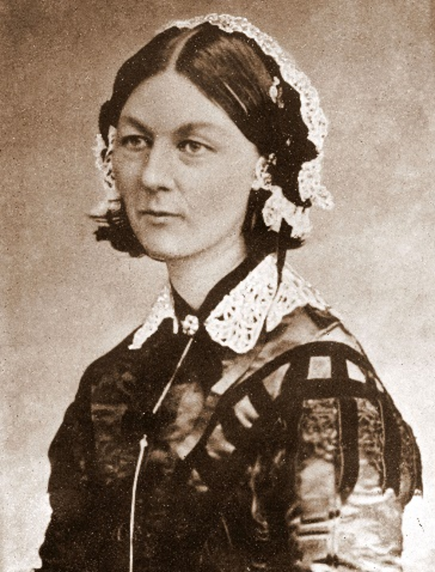
O que Nightingale encontrou em Scutari a levou a organizar um registro meticuloso das causas de morte entre os soldados britânicos. Os números mostravam que a maior parte das mortes não vinha dos combates, e sim de doenças contraídas dentro do próprio hospital, como cólera, febre tifoide e disenteria, favorecidas pela ausência de cuidados sanitários, conforme se pode observar na Figura 4.2. Nos primeiros sete meses da campanha, a mortalidade por doença correspondia sozinha a uma taxa anual de 60%, superior à da Grande Peste de Londres de 1665 (Friendly & Andrews, 2021).
De volta à Inglaterra em julho de 1856, ela passou a pressionar o governo britânico por reformas nos hospitais militares. Apresentou relatórios extensos, cheios de tabelas e de propostas concretas, e pouco aconteceu. Foi então que recorreu a um recurso que acabaria por mudar a história da comunicação de dados.
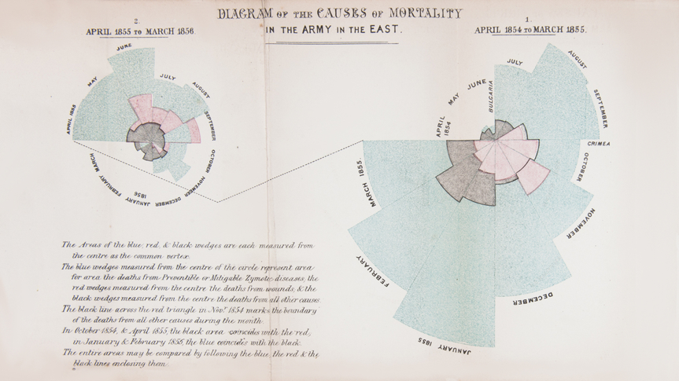
O diagrama representa cada mês do conflito como uma fatia de ângulo igual, cuja extensão a partir do centro corresponde à mortalidade daquele mês. As áreas azuis indicam mortes por doenças evitáveis, as vermelhas indicam mortes por ferimentos de combate e as cinzas indicam as demais causas, como acidentes e queimaduras. A separação em duas rosas é proposital, pois a Comissão Sanitária encarregada de investigar as condições dos hospitais chegou à região em março de 1855, exatamente na fronteira entre os dois períodos representados (Friendly & Andrews, 2021).
A comparação entre as duas rosas dispensa qualquer cálculo. O azul domina a figura inteira e encolhe visivelmente no segundo período. Em uma única imagem ficava demonstrado que os soldados morriam sobretudo de causas evitáveis e que as medidas sanitárias funcionavam. O argumento venceu onde os relatórios haviam falhado, e as reformas sanitárias foram adotadas nos hospitais militares britânicos. A estratégia está resumida em uma frase tradicionalmente atribuída a ela:
“O diagrama deve afetar através dos olhos o que não conseguimos transmitir ao cérebro do público através dos seus ouvidos à prova de palavras.”
Há no diagrama um detalhe que antecipa o assunto das próximas seções. Em uma versão anterior, Nightingale representou a mortalidade pela distância entre o centro e a ponta da fatia. Ela percebeu que o resultado enganava, porque o olho lê a área da fatia e não o seu comprimento, de modo que dobrar a taxa de mortalidade quadruplicava a área percebida. Na versão final passou a usar a raiz quadrada da distância, fazendo com que a área de cada fatia refletisse corretamente o número de mortes (Friendly & Andrews, 2021). Mais de um século antes de a psicologia da percepção ser sistematicamente incorporada ao projeto de gráficos, ela já havia identificado o problema e o corrigido.
4.2 Como percebemos elementos visuais
Todo gráfico codifica dados usando um repertório limitado de propriedades gráficas. Sistematizá-las ajuda a perceber que a escolha entre um gráfico e outro é, no fundo, uma escolha entre esses elementos (Munzner, 2015):
- posição, o local que o dado ocupa no espaço do gráfico;
- tamanho, a extensão linear das formas;
- ângulo, a rotação entre dois vetores;
- inclinação, a orientação de um vetor no espaço;
- forma, o símbolo usado para representar categorias;
- área, a extensão em duas dimensões;
- volume, a extensão em três dimensões;
- matiz, o tom ou coloração propriamente dito;
- saturação, a intensidade da matiz.
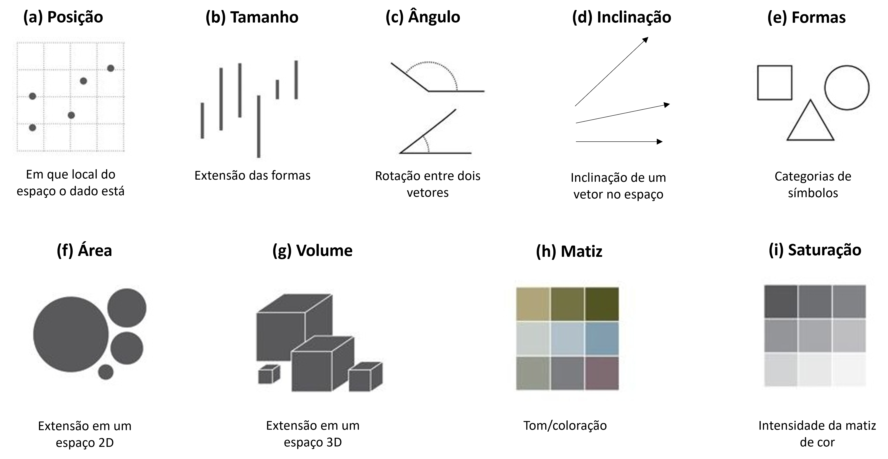
Os diferentes tipos de gráfico possuem como pecularidade exatamente um ou mais destes elementos. Enquanto um gráfico de barras usa posição e tamanho, um gráfico de setores1 usa ângulo e área. Já um gráfico de dispersão com pontos coloridos usa posição, matiz e eventualmente área. A pergunta que importa é quão eficiente cada um desses elementos é no processo de assimilação das informações que se pretende transmitir.
A resposta a essa pergunta pode ser dada a partir de um simples exercício visual. A Figura 4.4 mostra um mesmo conjunto de cinco valores codificado de três maneiras, por intensidade de cor, por área de círculo e por altura de barra. Antes de prosseguir na leitura, vale a pena parar e tentar responder, para cada um dos três painéis, quantas vezes o valor de D é maior que o de E.
Os valores são exatamente os mesmos nos três painéis, e D vale cinco vezes E. Com intensidade de cor conseguimos no máximo ordenar grosseiramente as categorias, sem nenhuma noção da razão entre elas. Com área acertamos a ordem e subestimamos a diferença, porque o olho comprime a percepção de área. Com altura de barra a razão de cinco para um é lida com boa precisão. A comparação, portanto, é progressivamente mais fácil da primeira para a terceira representação.
Esse resultado não é uma impressão subjetiva. Estudos experimentais foram realizados em ocasiões diferentes e chegaram à mesma ordenação (Cleveland & McGill, 1985; Heer & Bostock, 2010)2. A hierarquia resultante desses estudos (Figura 4.5) coloca no topo a posição em escala comum e alinhada, seguida da posição em escala comum mas desalinhada, da extensão, do ângulo, da inclinação, da área, do volume, da intensidade de cor e, por último, da matiz. Consequentemente, quando o objetivo é comparar quantidades com precisão, convém usar elementos do topo da hierarquia.
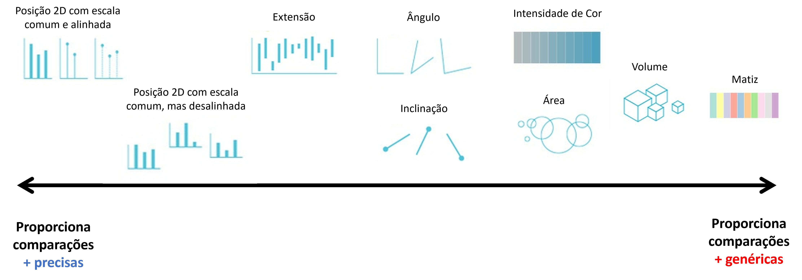
Isso não significa que os elementos da base sejam inúteis, e sim que eles servem a outro propósito ou apoiam a intuição de forma secundária. Um exemplo do primeiro caso é a matiz, bastante contraindicada para representar magnitude, porém excelente para distinguir categorias, porque o cérebro humano reconhece diferenças de tom com facilidade sem tentar quantificá-las.
O segundo caso aparece sempre que a leitura precisa fica a cargo de outro elemento e a codificação de baixa hierarquia apenas orienta o olhar. É o que veremos adiante neste capítulo no gráfico de dispersão em que uma terceira variável é representada pela intensidade de cor ou pelo tamanho dos pontos. A posição nos eixos sustenta a leitura precisa das duas primeiras variáveis, enquanto a cor ou área do ponto apenas indica se a terceira cresce ou diminui ao longo dos valores de \(x\) e \(y\), sem permitir comparação numérica direta entre observações.
4.3 A gramática dos gráficos
4.3.1 Por que uma gramática
Até aqui discutimos gráficos como objetos prontos, escolhidos de um catálogo. Quem aprende visualização dessa maneira acaba com uma lista mental de tipos de gráficos (barras, setores, dispersão, histograma, …) e com a tarefa de escolher um deles a cada análise. O problema dessa abordagem é que a lista é bastante extensa, não explica por que um tipo funciona melhor que outro e não ajuda em nada quando a situação não se encaixa em nenhum item do catálogo.
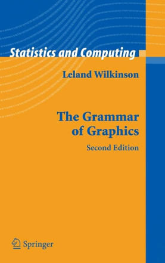
Em 1999, Leland Wilkinson propôs uma inversão dessa perspectiva em um trabalho que se tornou uma das referências teóricas mais influente da área, denominado a Gramática dos Gráficos3 (Wilkinson, 2005). O argumento central é que um gráfico não existe por si próprio, da mesma forma que uma frase não existe independentemente das palavras que a compõem. Sabemos que uma língua é muito mais que um repertório de frases prontas a serem memorizadas. Ela é um vocabulário extenso somado a regras de combinação, e dessa interação nasce a possibilidade de formular frases que ninguém jamais pronunciou. Wilkinson percebeu que gráficos funcionam do mesmo modo, ou seja, que existe um conjunto pequeno de componentes cujas combinações geram praticamente qualquer representação visual de dados, inclusive as que ainda não foram inventadas.
A consequência mais imediata dessa mudança de olhar é que a taxonomia dos tipos de gráfico se dissolve. O que parecem duas modalidades distintas costuma ser a mesma construção com uma única camada trocada. O caso mais eloquente é o par formado pelo gráfico de barras empilhadas e pelo gráfico de setores, caracterizando duas representações diferentes para a mesma informação.
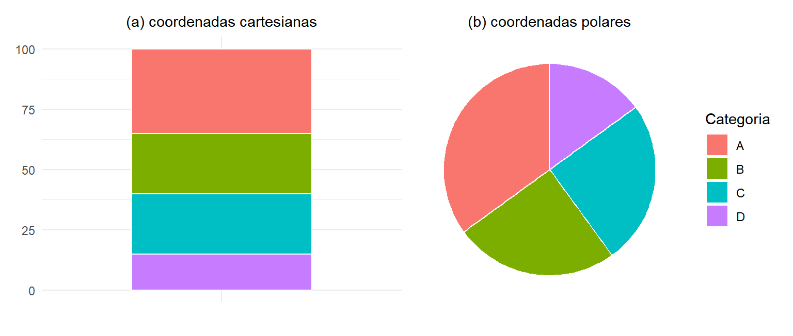
4.3.2 As camadas de um gráfico
A composição proposta pela Gramática dos Gráficos é modular e organizada em camadas sobrepostas, o que permite construir praticamente qualquer modalidade de gráfico a partir de um conjunto pequeno de decisões.
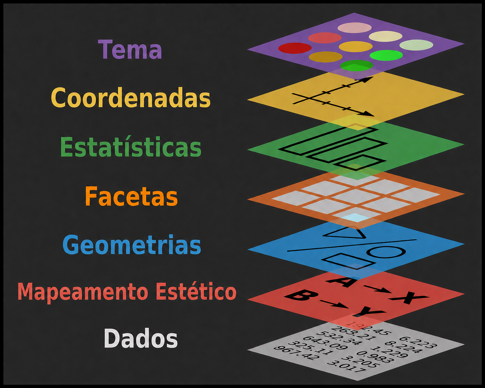
As camadas se dividem em dois grupos. O primeiro reúne os elementos fundamentais, sem os quais não há gráfico algum:
Os dados (data) são a tabela que fornece os valores a representar. Na gramática, ela é a primeira camada, pois determina o que é possível representar. Uma tabela em que cada linha é uma observação e cada coluna é uma variável, formato que vimos no capítulo anterior, é exatamente o que a gramática pressupõe.
O mapeamento estético (aesthetics ou aesthetic mapping) é a conexão entre cada variável da tabela e a propriedade gráfica que a representará. É aqui que a discussão da seção anterior entra na prática, porque mapear uma variável ao eixo horizontal, à cor ou ao tamanho dos pontos são decisões com consequências perceptivas muito diferentes. O mapeamento é a camada que traduz números em elementos visuais.
A geometria (geometry) é a forma visual concreta que traduz esse mapeamento, como pontos, barras, linhas ou caixas. Um mesmo mapeamento admite geometrias diferentes. Duas variáveis numéricas mapeadas aos eixos \(x\) e \(y\) podem virar uma nuvem de pontos ou uma linha, e a escolha entre elas depende de a relação entre as observações ser de comparação ou de continuidade.
O segundo grupo reúne os elementos complementares, que refinam o resultado sem alterar sua estrutura básica:
As estatísticas (statistics) inserem no gráfico quantidades calculadas a partir dos dados em vez dos valores originais. Essa camada costuma passar despercebida porque quase sempre age de forma silenciosa. Um histograma, por exemplo, agrupa os valores em classes e desenha a contagem de cada classe. Um gráfico de barras construído a partir de uma variável categórica também conta observações antes de desenhar, e um boxplot calcula quartis e limites antes de traçar a caixa.
As escalas (scales) definem como os valores das variáveis se convertem em valores concretos da propriedade gráfica, ou seja, quais números correspondem a quais posições no eixo, a quais cores e a quais tamanhos. Toda variável mapeada recebe automaticamente uma escala, e ajustá-la é o que permite trocar uma paleta de cores, inverter um eixo ou garantir que a área dos círculos seja proporcional ao valor representado.
O sistema de coordenadas (coordinates) organiza o espaço em que as geometrias são desenhadas, podendo ser cartesiano ou polar, por exemplo.
As facetas (facets) subdividem o gráfico em painéis segundo os níveis de uma ou duas variáveis categóricas, repetindo a mesma construção para cada subconjunto dos dados. É o recurso que permite comparar grupos sem sobrecarregar um único painel.
O tema (theme) reúne os ajustes estéticos que não codificam dado algum, como cor de fundo, presença de grades, tamanho de fonte e posição da legenda.
Convém guardar essa divisão, porque ela organiza tudo o que faremos daqui em diante. Diante de qualquer gráfico deste capítulo, vale o exercício de identificar qual variável está em qual mapeamento, qual geometria foi escolhida e quais camadas complementares foram acionadas.
4.3.3 O ggplot2
A Gramática dos Gráficos orienta o desenvolvimento das principais ferramentas de visualização em uso hoje, entre elas o Tableau, o Plotly e bibliotecas de Python como bokeh, altair, seaborn e plotnine. Sua implementação mais completa, porém, é o pacote ggplot2 do R, onde o duplo g inicial vem justamente da sigla em inglês Grammar of Graphics.
O ggplot2 foi desenvolvido por Hadley Wickham, que traduziu a proposta de Wilkinson para código. Ao implementá-la, inclusive, ele a reformulou naquilo que chamou de gramática em camadas (Wickham, 2010). Duas contribuições dessa reformulação explicam por que o pacote é tão econômico de usar.
A primeira é a organização em camadas propriamente dita, que agrupa dados, mapeamento, geometria e estatística em unidades sobrepostas. É isso que torna possível somar elementos a um gráfico com o operador +, escrevendo a construção na mesma ordem em que a pensamos. A segunda é a hierarquia de valores-padrão. Todo gráfico precisa das sete camadas para existir, e exigir que todas fossem declaradas a cada vez tornaria o código muito comprido. O ggplot2 deduz o que não foi informado. Ao pedir um histograma, o pacote sabe que a estatística é o agrupamento em classes, que o sistema de coordenadas é o cartesiano, que a escala do eixo horizontal é contínua e que o tema é o padrão. Nada disso precisa ser escrito, e tudo isso pode ser sobrescrito quando necessário. Por isso duas linhas de código produzem um gráfico completo, e por isso mesmo vale insistir que as camadas continuam todas lá, ainda que invisíveis no código.
Uma consequência prática dessa arquitetura é que o ggplot2 não tem uma função por tipo de gráfico. Não existe uma função histograma() e outra barras(). Existem funções para cada camada, e o tipo de gráfico emerge da combinação escolhida, como a Tabela 4.1 resume.
ggplot2.
| Camada | Papel | Funções no ggplot2 |
|---|---|---|
| Dados | Tabela com os valores a representar | ggplot(data = ...) |
| Mapeamento estético | Liga variáveis a propriedades gráficas | aes() |
| Geometria | Forma visual que representa os dados | geom_point(), geom_col(), geom_boxplot() |
| Estatística | Transforma os dados antes de desenhá-los | stat_*() e o argumento stat das geometrias |
| Escalas | Converte valores em posições, cores e tamanhos | scale_x_continuous(), scale_fill_manual() |
| Coordenadas | Organiza o espaço do gráfico | coord_cartesian(), coord_polar(), coord_flip() |
| Facetas | Subdivide o gráfico em painéis | facet_grid(), facet_wrap() |
| Tema | Ajustes estéticos que não codificam dados | theme_bw(), theme_minimal(), theme() |
Essa tabela é a chave de leitura de todo o restante do capítulo. Cada gráfico que produzirmos daqui em diante será uma escolha explícita de algumas dessas linhas, com as demais assumindo seus valores-padrão. Para quem quiser aprofundar o funcionamento do pacote camada por camada, a referência é o livro do próprio autor (Wickham, 2016), disponível gratuitamente em ggplot2-book.org.
O ggplot2 faz parte do tidyverse, de modo que carregar a coleção completa já o disponibiliza:
library(tidyverse)4.4 O primeiro gráfico
Trabalharemos com a base escolha_modal, a mesma dos capítulos anteriores. Lembre-se de fazer o download pelo link abaixo, salvando o arquivo em uma pasta onde você irá criar o projeto no RStudio junto com o script no qual executará o código para a criação dos gráficos:
O código abaixo repete o encadeamento construído no capítulo anterior, lendo o arquivo, convertendo as variáveis categóricas para factor, passando o tempo de viagem de minutos para horas e criando a velocidade média da viagem:
em <- read_csv("escolha_modal.csv", locale = locale(encoding = "Latin1")) |>
mutate(
sexo = factor(sexo),
posse_auto = factor(posse_auto),
modo_viagem = factor(modo_viagem),
tempo_viagem = tempo_viagem / 60,
vel_media_viagem = dist_viagem / tempo_viagem
)Vale conferir rapidamente a estrutura resultante antes de seguir:
glimpse(em)Rows: 1,000
Columns: 8
$ sexo <fct> F, F, F, F, M, M, F, F, M, M, M, F, M, M, M, F, M, M,…
$ idade <dbl> 34, 43, 55, 45, 45, 36, 18, 31, 53, 40, 58, 19, 33, 3…
$ renda <dbl> 3797, 3515, 4791, 2749, 2929, 2011, 1084, 2338, 7473,…
$ posse_auto <fct> N, N, S, N, N, N, N, N, S, N, S, N, S, N, N, N, N, S,…
$ modo_viagem <fct> Carro ou App, Carro ou App, TP, A pé, Carro ou App, T…
$ dist_viagem <dbl> 14.3, 36.1, 26.9, 2.9, 20.6, 22.6, 29.6, 26.9, 18.3, …
$ tempo_viagem <dbl> 0.4500000, 0.9166667, 1.0666667, 0.4333333, 0.7333333…
$ vel_media_viagem <dbl> 31.777778, 39.381818, 25.218750, 6.692308, 28.090909,…A base tem 1.000 observações e sete variáveis originais, além da velocidade média que acabamos de criar. Há três variáveis categóricas (sexo, posse_auto e modo_viagem) e cinco numéricas (idade, renda, dist_viagem, tempo_viagem e vel_media_viagem), combinação que nos permitirá percorrer todos os casos deste capítulo.
A primeira função que trabalharemos do pacote é a ggplot(), que recebe dois argumentos principais, que correspondem exatamente às duas primeiras camadas da gramática. O argumento data recebe a tabela, e o argumento mapping recebe a função aes(), dentro da qual declaramos a correspondência entre as variáveis correspondem a as propriedades gráficas. Vejamos o que acontece ao informar somente esses dois argumentos:
ggplot(data = em, mapping = aes(x = renda))ggplot() sem geometria. O sistema de eixos é construído, mas nada é desenhado.
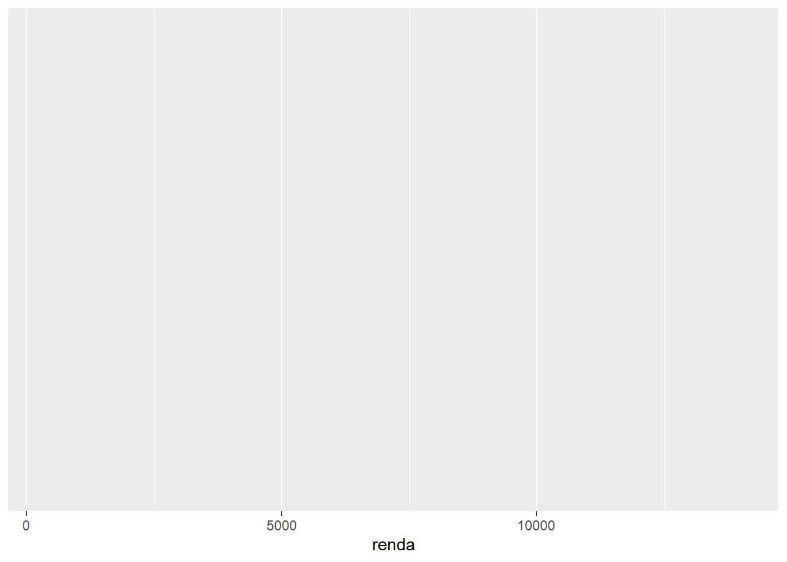
O R desenhou o painel e a escala do eixo horizontal correspondente à variável renda, sem ter desenhado nenhum elemento gráfico. Isso ocorre porque falta a terceira camada fundamental, a geometria. As geometrias são adicionadas com o operador + após ggplot(), conforme o exemplo da geom_histogram() abaixo que desenha um histograma para a variável renda:
ggplot(data = em, mapping = aes(x = renda)) +
geom_histogram()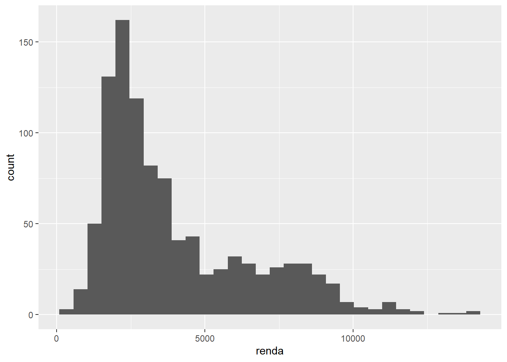
Com duas linhas de código tratamos de três das sete camadas da gramática. Os nomes dos argumentos podem ser omitidos, já que data e mapping são o primeiro e o segundo parâmetros da função. É também comum encadear a base de dados inicialmente com o pipe, o que se torna conveniente quando é preciso transformar os dados antes de plotá-los. Verifique, no seu computador, como as três formas abaixo produzem o mesmo resultado:
ggplot(data = em, mapping = aes(x = renda)) +
geom_histogram()
ggplot(em, aes(x = renda)) +
geom_histogram()
em |>
ggplot(aes(x = renda)) +
geom_histogram()
Aviso
+ e |> não são intercambiáveis
O operador |> encadeia transformações de dados, passando o resultado de uma função como primeiro argumento da seguinte. O operador + empilha camadas de um gráfico já iniciado por ggplot(). Trocar um pelo outro gera erro. Na prática, o |> aparece antes da chamada a ggplot() e o + aparece depois dela.
Para apresentarmos de forma mais sistematizada o desenvolvimento dos principais tipos de gráfico no R, subdiviremos as próximas seções em quatro partes:
Visualização de uma única variável.
Visualização de duas variáveis.
Visualização de três variáveis.
Visualização de quatro variáveis ou mais.
4.5 Visualizando uma única variável
Com uma única variável, a escolha do gráfico depende essencialmente da escala de mensuração desta variável (se numérica ou categórica), conforme demonstrado na ?fig-unica-variavel. Para variáveis numéricas queremos enxergar a forma da distribuição, onde os valores se concentram e quão dispersos eles são, e as ferramentas usuais são o histograma e o boxplot. Para variáveis categóricas queremos contar observações em cada nível, e a ferramenta usual é o gráfico de barras.
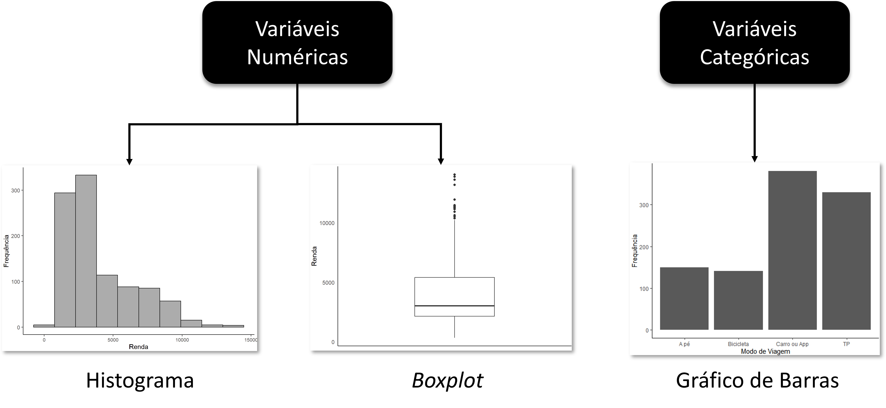
Apesar da leitura do gráfico de barras ser bem direta, existem aspectos teóricos importantes a serem discutidos a respeito de histogramas e do boxplot, que serão discutidos de forma mais minuciosa nas próximas seções.4.5.1 O histograma
O histograma divide o intervalo de valores da variável em faixas contíguas, chamadas classes, e representa cada classe por uma barra cuja altura corresponde à quantidade de observações que caem naquela faixa. O eixo horizontal traz a variável e o eixo vertical traz a contagem.

A leitura de um histograma responde a duas perguntas de imediato. A primeira é onde os dados se concentram, indicada pelas barras mais altas. A segunda é quão espalhados eles estão, indicada pela largura da região ocupada pelas barras.
4.5.2 Construindo um histograma passo a passo
Entender como o histograma é montado ajuda a interpretar as escolhas que os pacotes fazem por nós. Vamos construir um manualmente a partir dos tempos de viagem, em minutos, de vinte partidas de uma mesma linha de ônibus:
tempos <- c(58.8, 65.5, 42.9, 98.4, 87.0, 63.9, 60.8, 60.2, 66.9, 73.8,
77.6, 39.9, 58.1, 58.2, 56.5, 59.9, 59.7, 52.8, 62.6, 68.5)O primeiro passo é ordenar os valores de forma crescente, o que já dá uma primeira noção de como eles se distribuem:
sort(tempos) [1] 39.9 42.9 52.8 56.5 58.1 58.2 58.8 59.7 59.9 60.2 60.8 62.6 63.9 65.5 66.9
[16] 68.5 73.8 77.6 87.0 98.4O segundo passo é definir as classes, e para isso precisamos da amplitude dos dados e de uma quantidade de classes. A amplitude é a diferença entre o maior e o menor valor:
n <- length(tempos)
amplitude <- max(tempos) - min(tempos)
n[1] 20amplitude[1] 58.5A quantidade de classes não é escolhida arbitrariamente. Duas regras práticas são bastante difundidas. A primeira usa a raiz quadrada do número de observações, e a segunda é a regra de Sturges, que calcula \(k = 1 + \log_2(n)\):
sqrt(n)[1] 4.4721361 + log2(n)[1] 5.321928Ambas apontam para cinco classes neste caso. Dividindo a amplitude por esse número, obtemos a extensão de cada intervalo:
amplitude / 5[1] 11.7O valor de 11,7 minutos é pouco prático como referência de leitura, e por isso costumamos arredondar para um número redondo. Adotando intervalos de 12 minutos iniciados em 39, os limites das cinco classes ficam assim:
limites <- seq(from = 39, to = 99, by = 12)
limites[1] 39 51 63 75 87 99A convenção usual é tratar cada intervalo como fechado no início e aberto no final, de modo que a primeira classe contém os valores maiores ou iguais a 39 e menores que 51. No R, a função cut() faz esse recorte e o argumento right = FALSE estabelece justamente essa convenção. O terceiro passo é contar quantas observações caem em cada classe:
tab_classes <- tibble(tempo = tempos) |>
mutate(classe = cut(tempo, breaks = limites, right = FALSE)) |>
count(classe, name = "frequencia") |>
mutate(proporcao = frequencia / sum(frequencia))
tab_classes |>
knitr::kable()| classe | frequencia | proporcao |
|---|---|---|
| [39,51) | 2 | 0.10 |
| [51,63) | 10 | 0.50 |
| [63,75) | 5 | 0.25 |
| [75,87) | 1 | 0.05 |
| [87,99) | 2 | 0.10 |
O quarto e último passo é desenhar uma barra para cada classe, com altura igual à sua frequência. É exatamente o que o geom_histogram() faz, e podemos reproduzir a construção manual informando os mesmos limites por meio do argumento breaks:
tibble(tempo = tempos) |>
ggplot(aes(x = tempo)) +
geom_histogram(breaks = limites, closed = "left",
color = "black", fill = "gray70") +
labs(x = "Tempo de viagem (min)", y = "Frequência") +
theme_bw()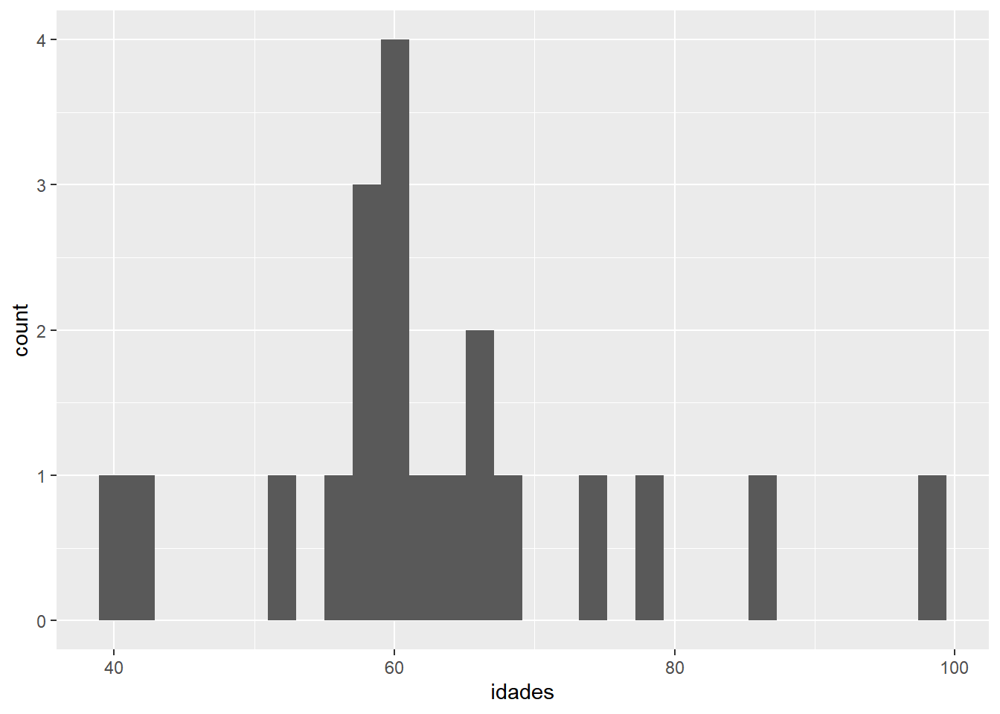
A escolha da largura do intervalo tem efeito direto sobre a leitura. Intervalos muito largos escondem a estrutura da distribuição, reduzindo-a a poucas barras que pouco informam sobre sua forma:
tibble(tempo = tempos) |>
ggplot(aes(x = tempo)) +
geom_histogram(binwidth = 20, boundary = 40,
color = "black", fill = "gray70") +
labs(x = "Tempo de viagem (min)", y = "Frequência") +
theme_bw()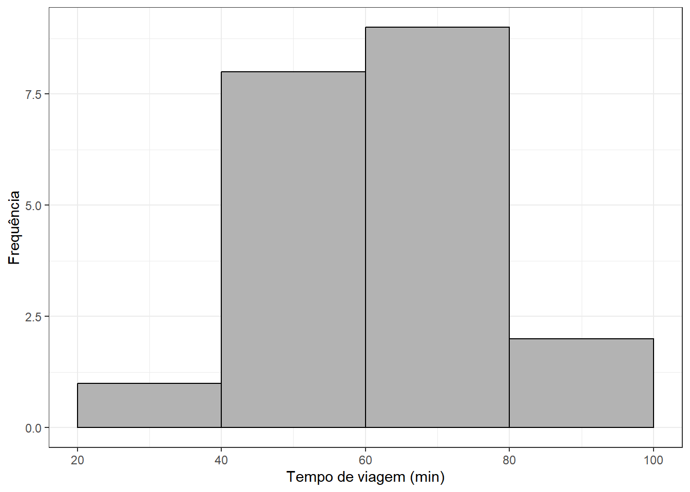
Intervalos muito estreitos produzem o problema oposto, um gráfico irregular no qual cada barra representa pouquíssimas observações e o padrão geral se perde no ruído:
tibble(tempo = tempos) |>
ggplot(aes(x = tempo)) +
geom_histogram(binwidth = 5, boundary = 40,
color = "black", fill = "gray70") +
labs(x = "Tempo de viagem (min)", y = "Frequência") +
theme_bw()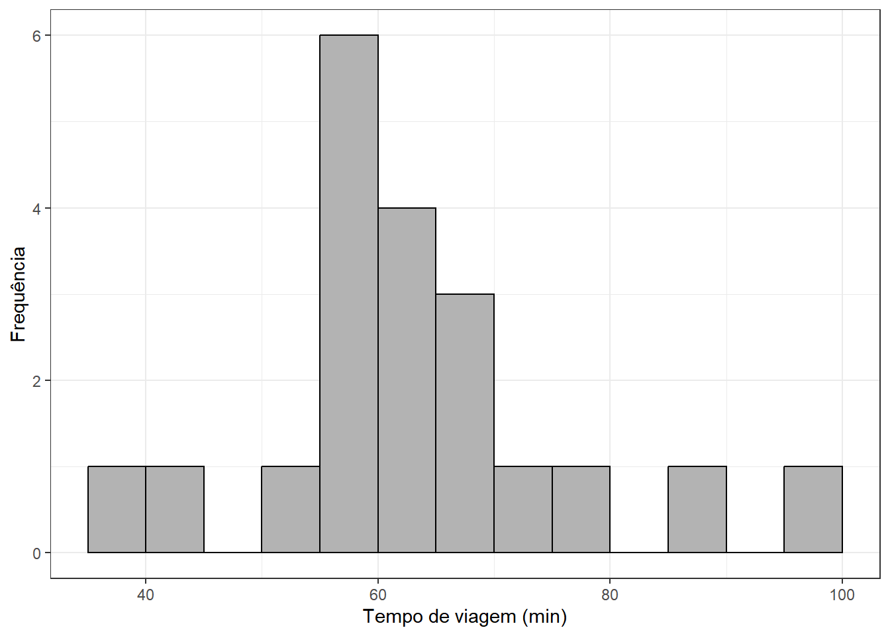
As regras práticas apresentadas acima servem justamente para evitar esses dois extremos, mas nenhuma delas dispensa a inspeção visual do resultado.
De volta à base em, o geom_histogram() aceita duas formas de controlar as classes. O argumento bins define quantas classes queremos e o argumento binwidth define a extensão de cada uma. Usar binwidth costuma ser mais informativo, porque a extensão tem significado na unidade da variável:
em |>
ggplot(aes(x = renda)) +
geom_histogram(binwidth = 500) +
labs(x = "Renda (R$)", y = "Frequência") +
theme_bw()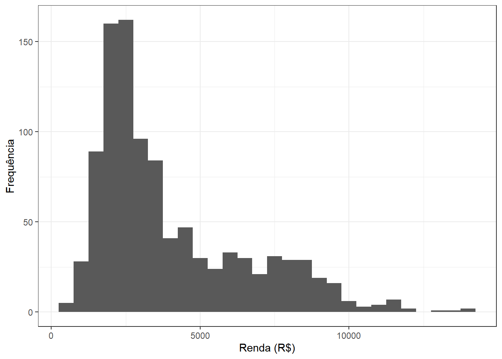
A aparência das barras é ajustada pelos argumentos color, que define a cor do contorno, fill, que define a cor de preenchimento, e alpha, que define a opacidade entre 0 e 1. Aproveitamos também para adicionar rótulos com labs():
em |>
ggplot(aes(x = renda)) +
geom_histogram(binwidth = 500,
color = "black", fill = "steelblue", alpha = 0.4) +
labs(
x = "Renda (R$)",
y = "Frequência",
title = "Distribuição da renda dos entrevistados",
subtitle = "Classes de R$ 500"
) +
theme_bw()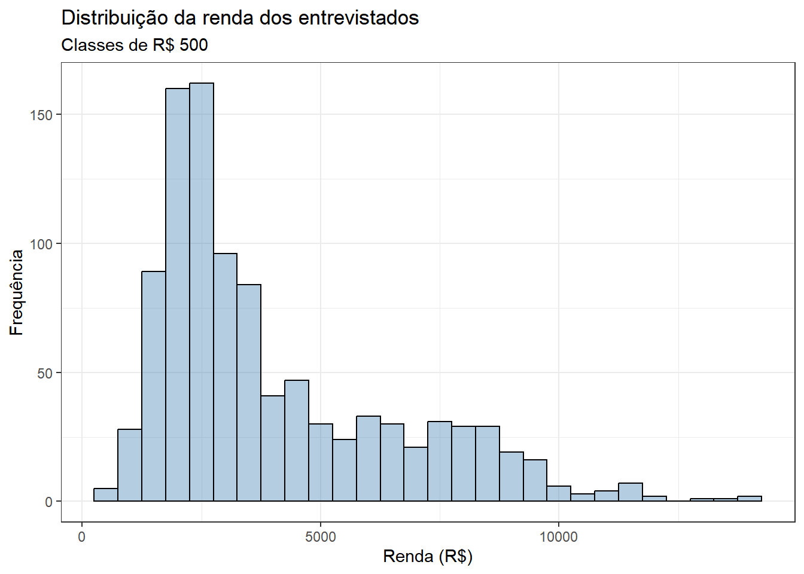
NotaArgumentos dentro e fora de
aes()
Os argumentos color, fill e alpha acima estão fora de aes(), e por isso não são mapeamento estético. Eles atribuem um valor fixo à geometria inteira. Quando esses mesmos argumentos aparecem dentro de aes(), passam a representar uma variável da base, e o ggplot2 cria automaticamente uma escala e uma legenda para eles. Essa distinção percorre todo o restante do capítulo.
A última camada que costumamos ajustar é o tema. O ggplot2 traz vários temas prontos, entre eles theme_bw(), theme_minimal(), theme_classic() e theme_void(), que alteram cores de fundo, grades e eixos sem tocar nos dados representados.
4.5.3 O boxplot
O boxplot representa a mesma distribuição de outra maneira, resumindo-a por meio de suas medidas de posição. Ele é composto por uma caixa, dois traços que dela se estendem, chamados whiskers, e eventualmente por pontos isolados.

A caixa é delimitada pelo primeiro e pelo terceiro quartis, com um traço interno na mediana. Ela contém, portanto, os 50% centrais das observações, e quanto menor sua altura maior é a concentração no centro da distribuição. Os whiskers se estendem até o valor mais extremo que ainda esteja a até 1,5 intervalo interquartil de distância da caixa. Observações além desse limite são desenhadas individualmente e chamadas de outliers, ou valores discrepantes, sendo pontos de atenção no controle de qualidade dos dados.
Para construir um boxplot da renda, mapeamos a variável ao eixo vertical e adicionamos geom_boxplot():
em |>
ggplot(aes(y = renda)) +
geom_boxplot() +
labs(y = "Renda (R$)") +
theme_bw()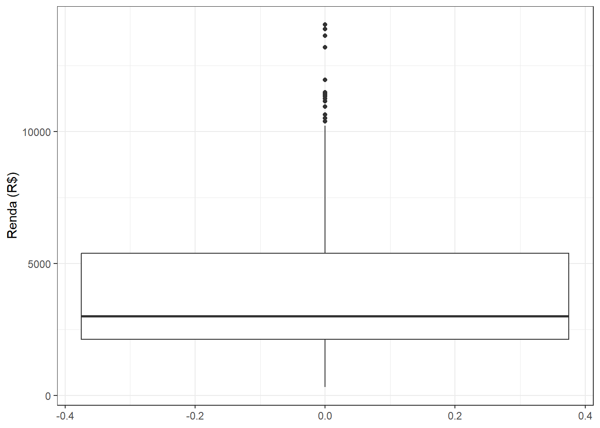
A caixa ocupa toda a largura disponível, o que é pouco elegante. Como o ggplot2 posiciona a caixa entre -0,4 e 0,4 no eixo horizontal, basta ampliar os limites desse eixo com xlim() para obter uma proporção mais agradável:
em |>
ggplot(aes(y = renda)) +
geom_boxplot() +
xlim(-1, 1) +
labs(y = "Renda (R$)") +
theme_bw()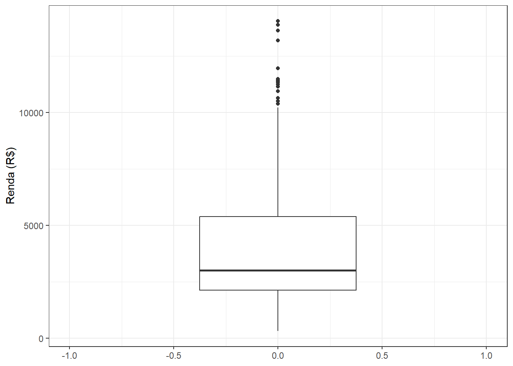
Vale conferir numericamente a que correspondem os elementos do gráfico. Calculando os quartis, o intervalo interquartil e os limites dos whiskers:
Q1 <- quantile(em$renda, 0.25)
Q3 <- quantile(em$renda, 0.75)
IQR <- Q3 - Q1
c(Q1 = Q1, mediana = median(em$renda), Q3 = Q3, IQR = IQR) Q1.25% mediana Q3.75% IQR.75%
2141.75 3017.00 5398.00 3256.25 c(limite_inferior = Q1 - 1.5 * IQR, minimo = min(em$renda))limite_inferior.25% minimo
-2742.625 327.000 c(limite_superior = Q3 + 1.5 * IQR, maximo = max(em$renda))limite_superior.75% maximo
10282.38 14049.00 O whisker inferior termina no valor mínimo observado, porque este é maior que \(Q_1 - 1{,}5 \cdot IQR\). Já o whisker superior termina antes do máximo, o que confirma a existência de observações classificadas como outliers na cauda superior da distribuição de renda.
Histograma e boxplot são complementares. O histograma mostra a forma completa da distribuição, incluindo eventuais múltiplos picos, e o boxplot resume posição e dispersão de maneira compacta, o que o torna especialmente útil para comparar vários grupos lado a lado.

4.5.4 O gráfico de barras
Para variáveis categóricas, a representação usual é o gráfico de barras, que conta as observações em cada nível. O eixo horizontal traz os níveis e o eixo vertical traz a contagem, dada pela altura das barras.
O caminho mais direto usa geom_bar(), que faz a contagem internamente a partir da base completa:
em |>
ggplot(aes(x = modo_viagem)) +
geom_bar() +
labs(x = "Modo de viagem", y = "Frequência") +
theme_bw()
Um caminho alternativo parte de uma tabela já agregada. Sumarizando antes com count(), passamos a ter uma coluna com as contagens, e nesse caso a geometria apropriada é geom_col(), que usa os valores tal como estão em vez de contá-los:
tab_mv <- em |>
count(modo_viagem)
tab_mv# A tibble: 4 × 2
modo_viagem n
<fct> <int>
1 A pé 150
2 Bicicleta 141
3 Carro ou App 380
4 TP 329tab_mv |>
ggplot(aes(x = modo_viagem, y = n)) +
geom_col() +
labs(x = "Modo de viagem", y = "Frequência") +
theme_bw()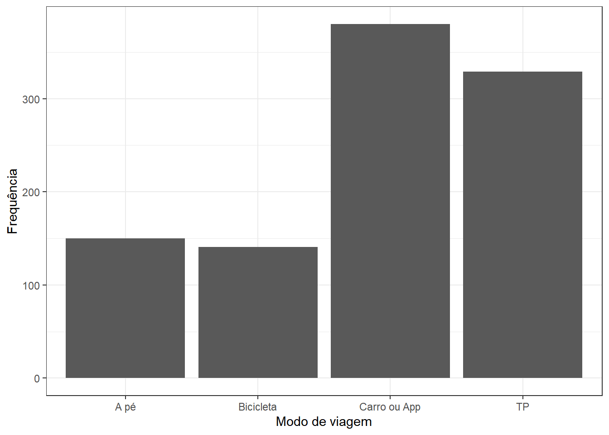
Uma terceira forma equivalente é geom_bar(stat = "identity"), notação mais antiga que produz o mesmo resultado de geom_col() e ainda aparece com frequência em códigos R.
Os ajustes visuais seguem a mesma lógica do histograma, com width controlando a largura das barras, cujo padrão é 0,9. Quando os rótulos dos níveis são longos, a função coord_flip() inverte os eixos e melhora bastante a legibilidade:
em |>
ggplot(aes(x = modo_viagem)) +
geom_bar(width = 0.6, color = "black", fill = "#4D48B2", alpha = 0.8) +
coord_flip() +
labs(x = "Modo de viagem", y = "Frequência") +
theme_bw()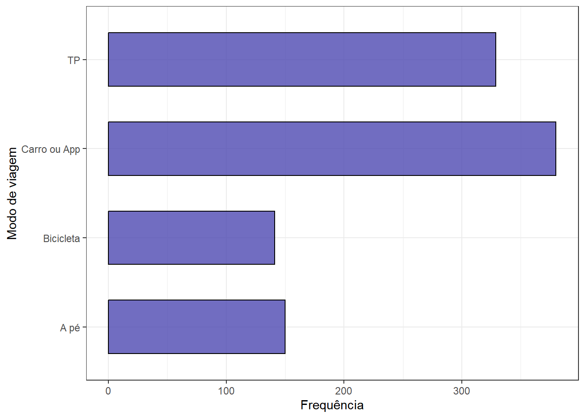
Note que o eixo de contagem inicia no zero em todos os casos, conforme a regra discutida anteriormente. O ggplot2 adota esse comportamento por padrão justamente por essa razão.
4.6 Visualizando duas variáveis
Com duas variáveis passamos a investigar relações, e o gráfico adequado depende da combinação de tipos. São três situações possíveis.
4.6.1 Duas variáveis numéricas
O gráfico de dispersão representa cada observação por um ponto cujas coordenadas são os valores das duas variáveis. É a representação que melhor aproveita a hierarquia de percepção, porque usa posição nos dois eixos.
em |>
ggplot(aes(x = dist_viagem, y = tempo_viagem)) +
geom_point() +
labs(x = "Distância da viagem (km)", y = "Tempo de viagem (h)") +
theme_bw()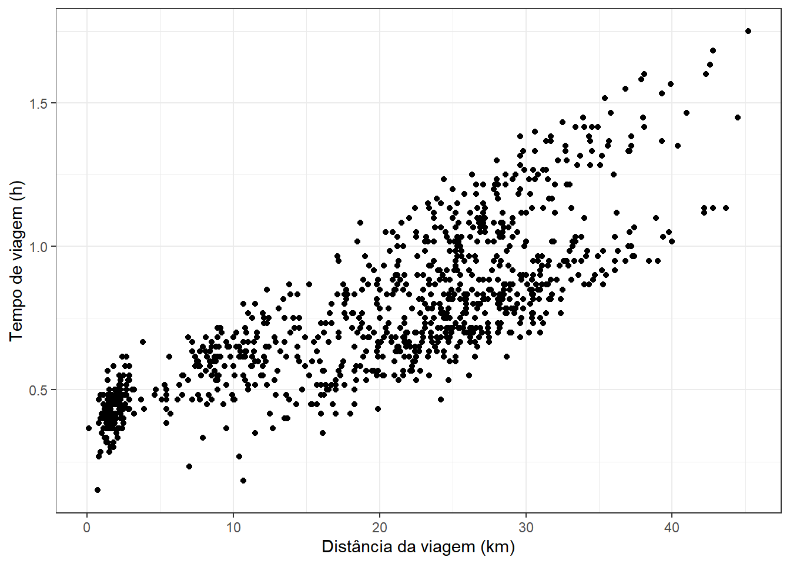
Com mil observações, muitos pontos se sobrepõem e a densidade da nuvem fica difícil de avaliar. O argumento alpha resolve o problema, porque regiões com mais sobreposição ficam visivelmente mais escuras:
em |>
ggplot(aes(x = dist_viagem, y = tempo_viagem)) +
geom_point(size = 3, alpha = 0.2, color = "blue") +
labs(
x = "Distância da viagem (km)",
y = "Tempo de viagem (h)",
title = "Tempo de viagem em função da distância"
) +
theme_bw()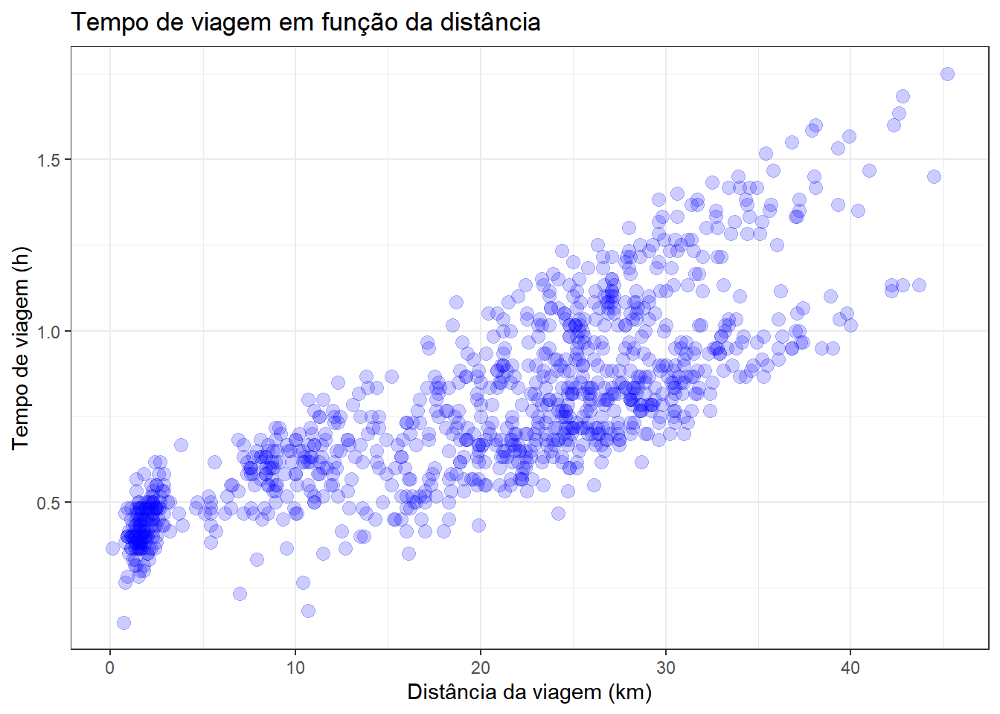
A nuvem revela uma relação positiva entre as duas variáveis, com dispersão crescente à medida que a distância aumenta.
4.6.2 Duas variáveis categóricas
Para cruzar duas variáveis categóricas, mantemos a primeira no eixo horizontal e mapeamos a segunda ao preenchimento das barras. Vamos cruzar o sexo do entrevistado com a posse de automóvel:
em |>
ggplot(aes(x = sexo, fill = posse_auto)) +
geom_bar() +
labs(x = "Sexo", y = "Frequência", fill = "Possui auto") +
theme_bw()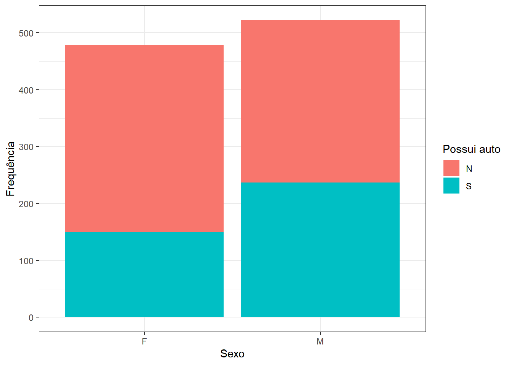
O comportamento padrão é position = "stack", que empilha as categorias. O empilhamento facilita a leitura do total de cada barra e dificulta a comparação entre as categorias empilhadas, já que apenas o segmento da base fica alinhado a uma escala comum. Alterando para position = "dodge", as barras ficam lado a lado e passam a compartilhar a mesma linha de base:
em |>
ggplot(aes(x = sexo, fill = posse_auto)) +
geom_bar(position = "dodge") +
labs(x = "Sexo", y = "Frequência", fill = "Possui auto") +
theme_bw()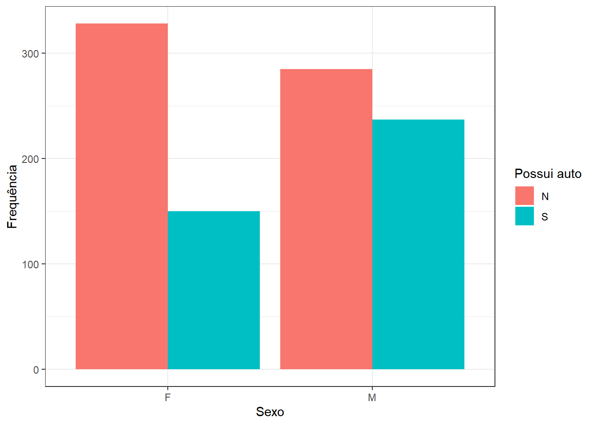
Frequentemente interessa mais a frequência relativa que a absoluta, sobretudo quando os grupos têm tamanhos diferentes. Aqui existe uma armadilha comum. Ao calcular a proporção logo após o count(), obtemos a participação de cada combinação no total geral:
em |>
count(sexo, posse_auto) |>
mutate(p = n / sum(n))# A tibble: 4 × 4
sexo posse_auto n p
<fct> <fct> <int> <dbl>
1 F N 328 0.328
2 F S 150 0.15
3 M N 285 0.285
4 M S 237 0.237As quatro proporções somam 1, e não é isso que queremos. A pergunta correta é qual a proporção de cada categoria de posse de automóvel dentro de cada sexo, o que exige agrupar pela primeira variável antes de calcular:
tab_sexo_auto <- em |>
count(sexo, posse_auto) |>
group_by(sexo) |>
mutate(p = n / sum(n))
tab_sexo_auto# A tibble: 4 × 4
# Groups: sexo [2]
sexo posse_auto n p
<fct> <fct> <int> <dbl>
1 F N 328 0.686
2 F S 150 0.314
3 M N 285 0.546
4 M S 237 0.454Agora as proporções somam 1 dentro de cada sexo, e o gráfico empilhado passa a comparar composições:
tab_sexo_auto |>
ggplot(aes(x = sexo, y = p, fill = posse_auto)) +
geom_col() +
labs(x = "Sexo", y = "Proporção", fill = "Possui auto") +
theme_bw()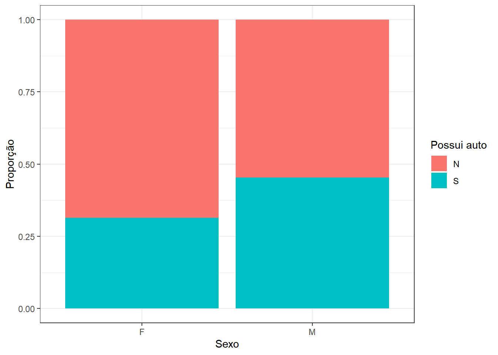
4.6.3 Uma numérica e uma categórica
Quando cruzamos uma variável numérica com uma categórica, o objetivo costuma ser comparar a distribuição da primeira entre os níveis da segunda. O boxplot é a opção mais econômica, porque coloca vários resumos lado a lado com os eixos alinhados:
em |>
ggplot(aes(x = modo_viagem, y = vel_media_viagem)) +
geom_boxplot() +
labs(x = "Modo de viagem", y = "Velocidade média (km/h)") +
theme_bw()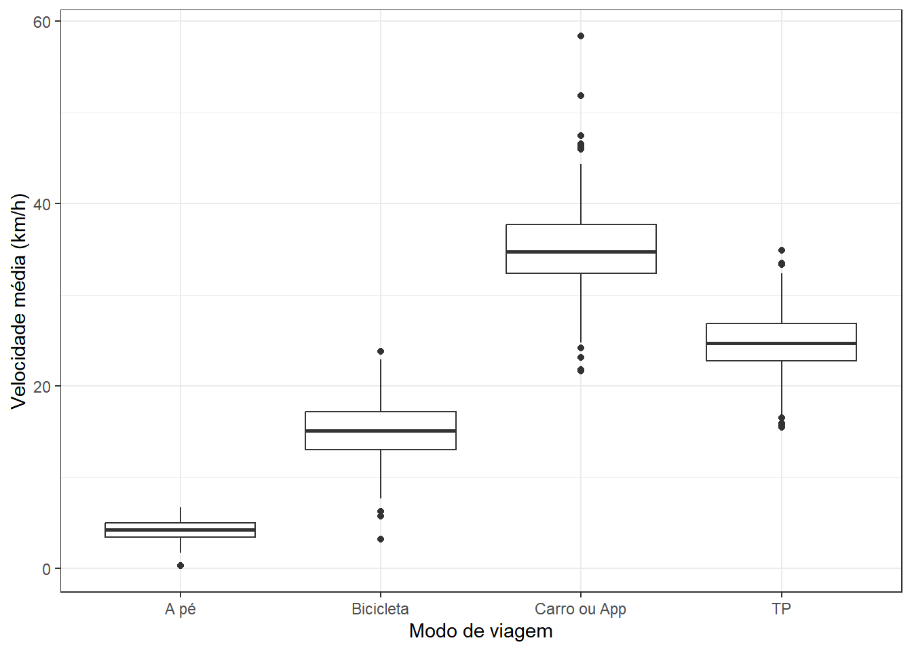
O gráfico separa nitidamente os modos motorizados dos não motorizados, e mostra também que a dispersão interna varia bastante de um modo para outro.
Uma alternativa é manter o histograma e usar a variável categórica para subdividir o gráfico em painéis, o que introduz a camada de facetas. A função facet_grid() recebe uma fórmula na qual a variável antes do til define as linhas do painel e a variável depois dele define as colunas:
em |>
ggplot(aes(x = vel_media_viagem)) +
geom_histogram(color = "black", fill = "gray70") +
facet_grid(sexo ~ .) +
labs(x = "Velocidade média (km/h)", y = "Frequência") +
theme_bw()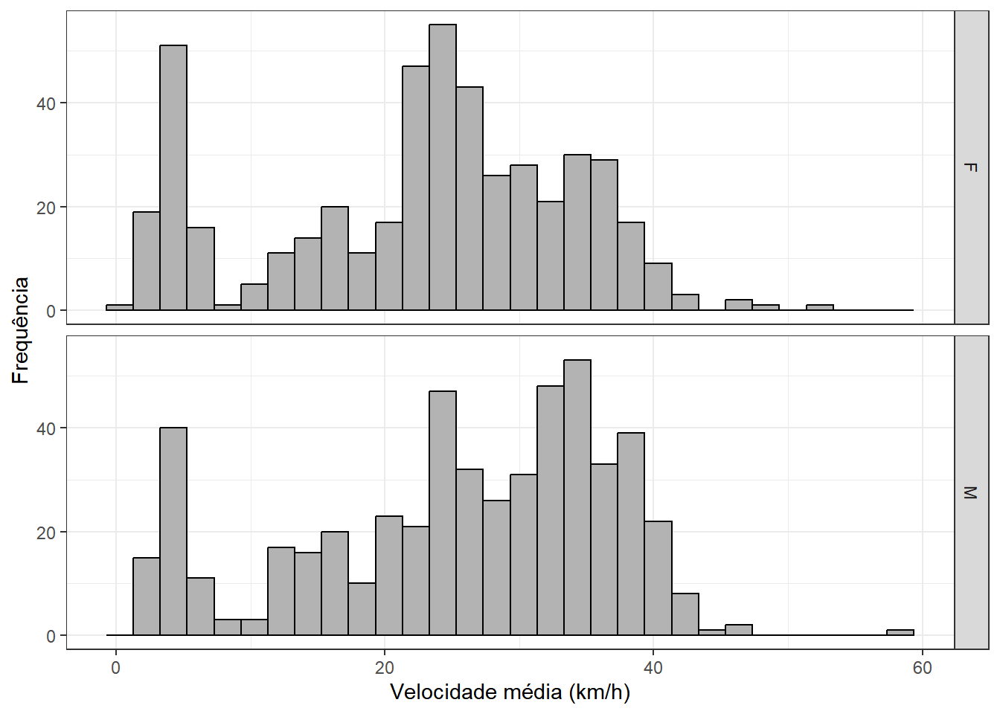
Uma terceira alternativa substitui as barras por curvas de densidade sobrepostas, o que facilita a comparação direta das formas por eliminar a separação em painéis:
em |>
ggplot(aes(x = vel_media_viagem, fill = sexo)) +
geom_density(alpha = 0.5) +
labs(x = "Velocidade média (km/h)", y = "Densidade", fill = "Sexo") +
theme_bw()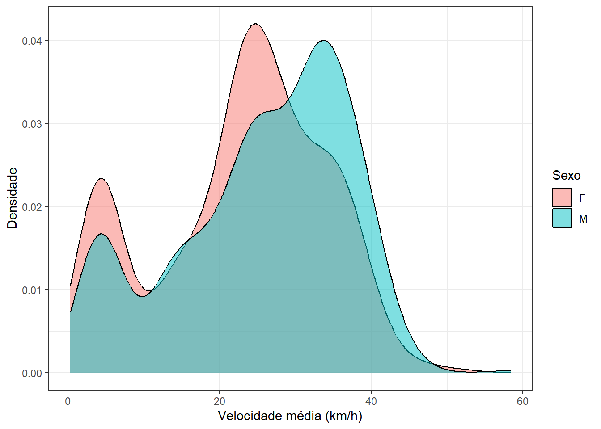
4.7 Visualizando três ou mais variáveis
A partir da terceira variável, todas as representações consistem em acrescentar camadas de codificação aos gráficos que já conhecemos. É aqui que a hierarquia de percepção se torna um critério prático de decisão, porque precisamos distribuir as variáveis entre elementos visuais de eficácia desigual. A regra de bolso é reservar os eixos, que ocupam o topo da hierarquia, para as variáveis mais importantes da análise, e alocar as demais a cor, tamanho, forma ou facetas.
4.7.1 Três e quatro variáveis numéricas
Partindo do gráfico de dispersão, a terceira variável numérica pode ser mapeada ao tamanho dos pontos:
em |>
ggplot(aes(x = dist_viagem, y = tempo_viagem, size = idade)) +
geom_point(alpha = 0.3) +
labs(
x = "Distância da viagem (km)",
y = "Tempo de viagem (h)",
size = "Idade"
) +
theme_bw()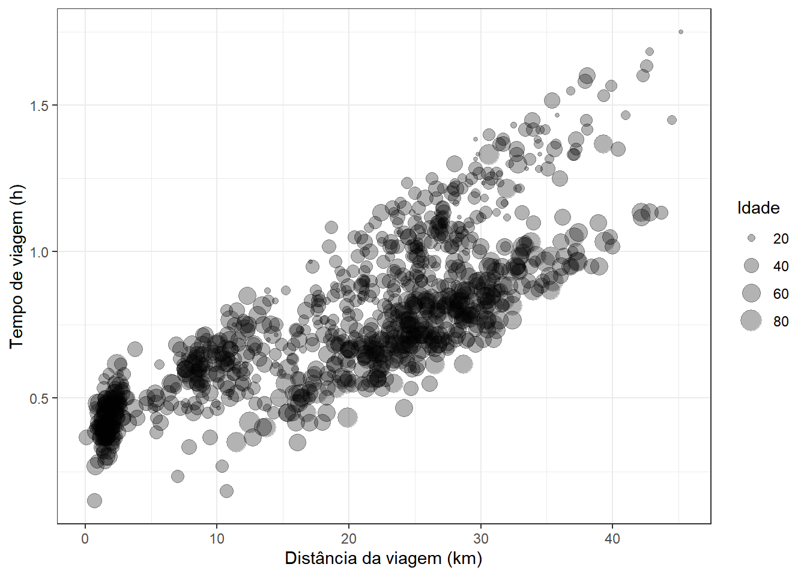
Ou, alternativamente, à intensidade de cor:
em |>
ggplot(aes(x = dist_viagem, y = tempo_viagem, color = idade)) +
geom_point() +
labs(
x = "Distância da viagem (km)",
y = "Tempo de viagem (h)",
color = "Idade"
) +
theme_bw()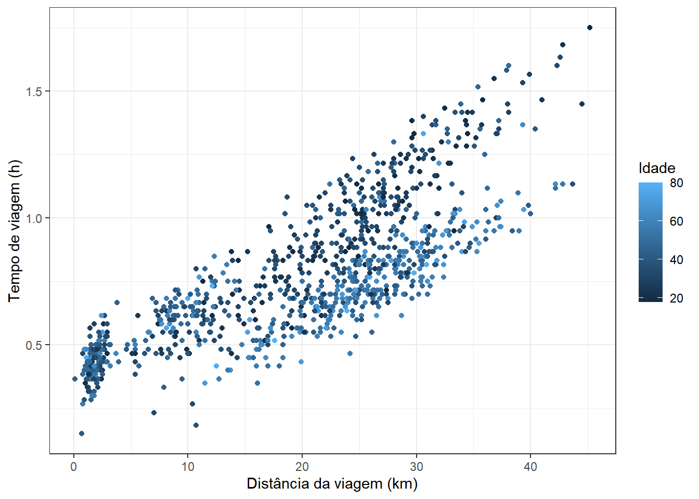
Combinando os dois recursos, chegamos a quatro variáveis numéricas em um único gráfico. A função scale_color_distiller() permite trocar a paleta de cores por uma sequencial mais legível que a padrão:
em |>
ggplot(aes(x = dist_viagem, y = tempo_viagem,
size = renda, color = idade)) +
geom_point(alpha = 0.6) +
scale_color_distiller(palette = "BuPu", direction = 1) +
labs(
x = "Distância da viagem (km)",
y = "Tempo de viagem (h)",
size = "Renda (R$)",
color = "Idade"
) +
theme_bw()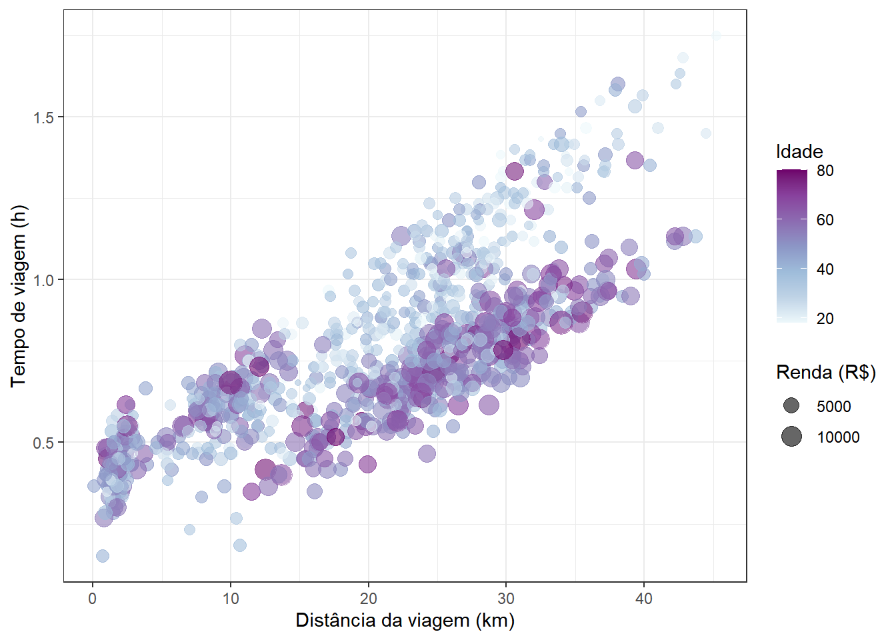
Este é um bom momento para lembrar que a possibilidade técnica não implica boa prática. Tamanho e intensidade de cor ocupam posições baixas na hierarquia de percepção, de modo que renda e idade aqui comunicam tendências gerais e não permitem comparações precisas. Quando a leitura exata da terceira ou quarta variável for essencial, é preferível produzir vários gráficos mais simples.
4.7.2 Duas numéricas e uma categórica
Para uma variável categórica, o recurso natural é a matiz de cor, que é ruim para magnitude e ótima para distinguir categorias:
em |>
ggplot(aes(x = dist_viagem, y = tempo_viagem, color = modo_viagem)) +
geom_point(alpha = 0.6) +
labs(
x = "Distância da viagem (km)",
y = "Tempo de viagem (h)",
color = "Modo de viagem"
) +
theme_bw()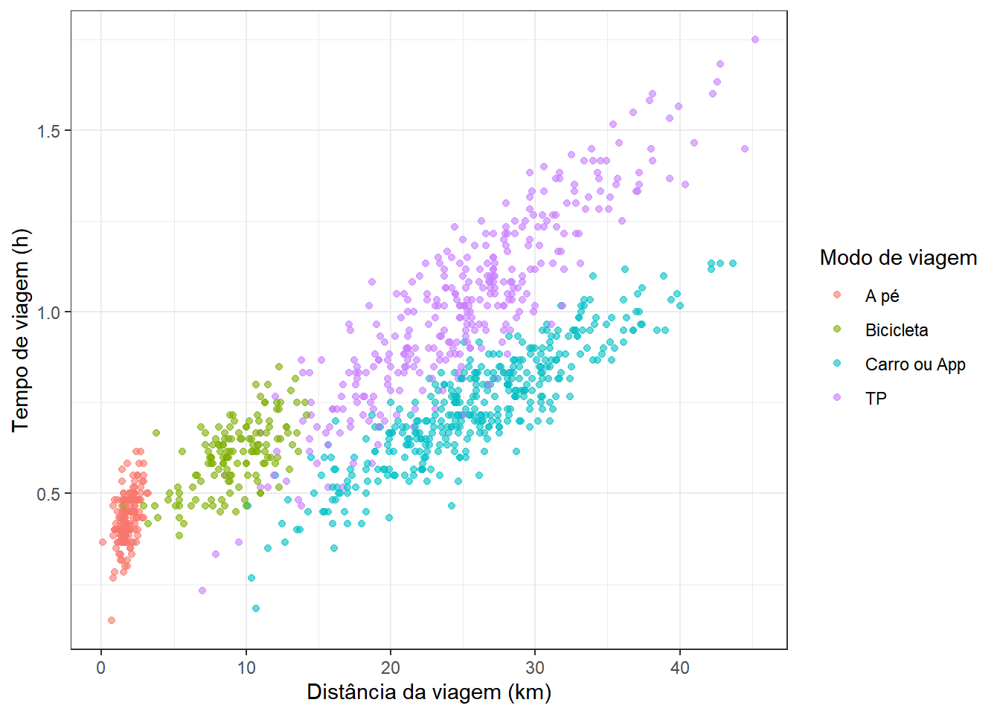
A separação entre os modos fica evidente, com cada categoria formando uma faixa própria de inclinação, o que faz sentido porque a inclinação da relação entre distância e tempo é a própria velocidade média.
A forma dos pontos é outra alternativa para variáveis categóricas, embora seja menos eficaz que a cor e só funcione bem com poucos níveis:
em |>
ggplot(aes(x = dist_viagem, y = tempo_viagem, shape = sexo)) +
geom_point(alpha = 0.5) +
labs(
x = "Distância da viagem (km)",
y = "Tempo de viagem (h)",
shape = "Sexo"
) +
theme_bw()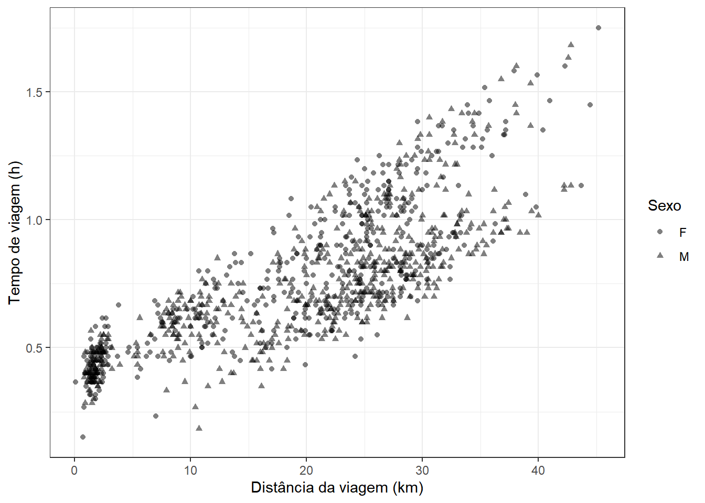
4.7.3 Duas categóricas e uma numérica
Partindo do boxplot agrupado, a segunda variável categórica pode ser mapeada ao preenchimento das caixas. A função scale_fill_manual() permite definir cores específicas para cada nível:
em |>
ggplot(aes(x = sexo, y = vel_media_viagem, fill = posse_auto)) +
geom_boxplot() +
scale_fill_manual(values = c("#E4A11B", "#3B71CA")) +
labs(
x = "Sexo",
y = "Velocidade média (km/h)",
fill = "Possui auto"
) +
theme_bw()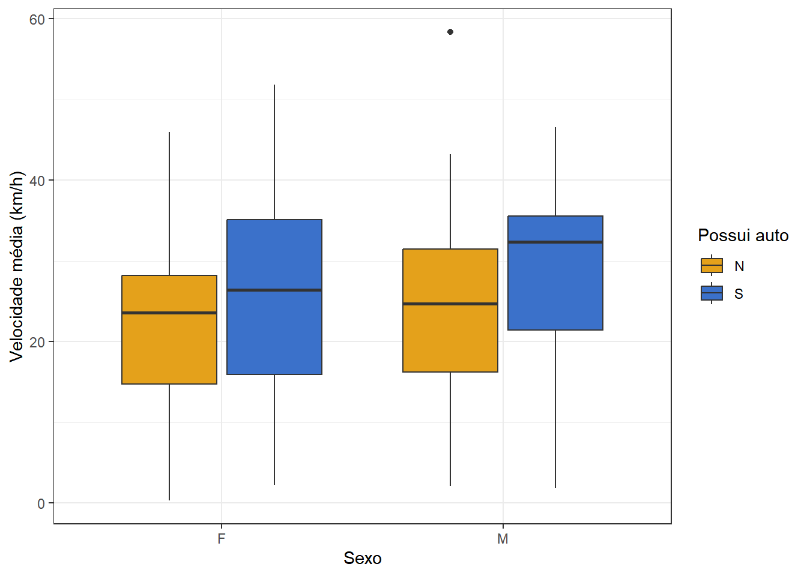
Ou então às facetas, o que separa os grupos em painéis distintos:
em |>
ggplot(aes(x = sexo, y = vel_media_viagem)) +
geom_boxplot() +
facet_grid(. ~ posse_auto) +
labs(x = "Sexo", y = "Velocidade média (km/h)") +
theme_bw()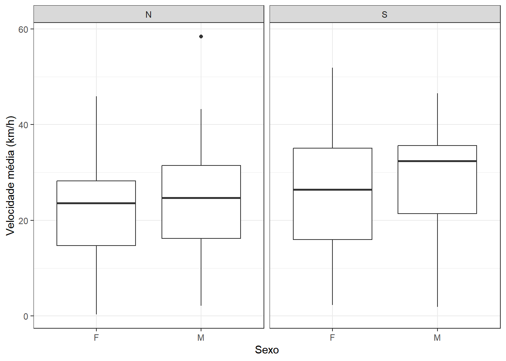
A escolha entre as duas depende da comparação que interessa. Com cor, comparamos os níveis da segunda categórica dentro de cada nível da primeira, porque as caixas ficam próximas. Com facetas, comparamos o padrão geral entre os painéis.
4.7.4 Três e quatro variáveis categóricas
Com três variáveis categóricas e nenhuma numérica, o que resta a representar é a contagem de observações. Combinamos então eixo horizontal, preenchimento e facetas, uma para cada variável, mantendo a contagem no eixo vertical:
em |>
count(sexo, posse_auto, modo_viagem) |>
ggplot(aes(x = sexo, y = n, fill = posse_auto)) +
geom_col(position = "dodge") +
facet_grid(. ~ modo_viagem) +
labs(
x = "Sexo",
y = "Frequência",
fill = "Possui auto"
) +
theme_bw()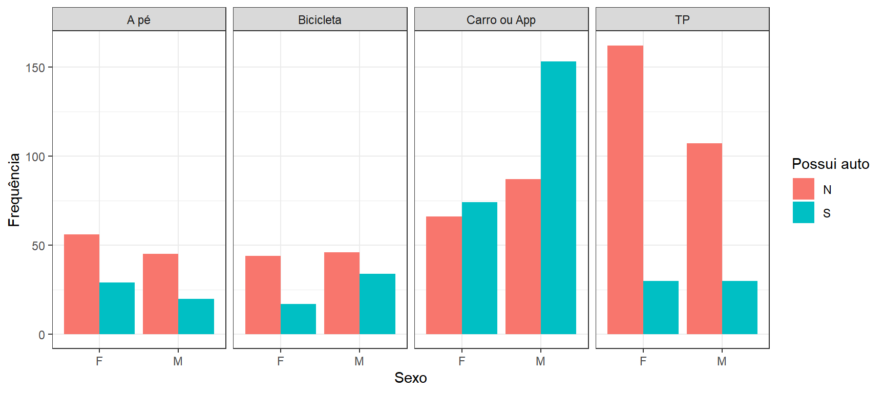
A versão em frequência relativa exige o mesmo cuidado com o agrupamento visto anteriormente. Para que cada barra empilhada represente a composição dentro de uma combinação de sexo e modo de viagem, agrupamos por essas duas variáveis antes de calcular a proporção:
em |>
count(sexo, modo_viagem, posse_auto) |>
group_by(sexo, modo_viagem) |>
mutate(p = n / sum(n)) |>
ggplot(aes(x = sexo, y = p, fill = posse_auto)) +
geom_col() +
facet_grid(. ~ modo_viagem) +
labs(
x = "Sexo",
y = "Proporção",
fill = "Possui auto"
) +
theme_bw()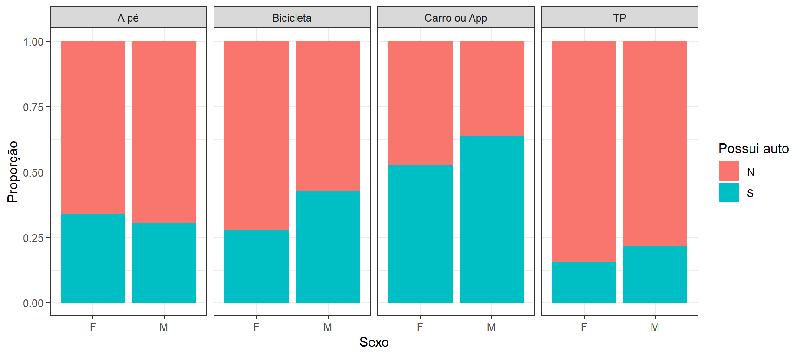
Uma quarta variável categórica cabe ainda na segunda dimensão do grid de painéis. Vamos criar uma variável dicotômica de faixa etária e usá-la nas linhas do grid, deixando o modo de viagem nas colunas:
em |>
mutate(faixa_etaria = ifelse(idade > 40, "Mais de 40 anos", "Até 40 anos")) |>
count(sexo, posse_auto, faixa_etaria, modo_viagem) |>
ggplot(aes(x = sexo, y = n, fill = posse_auto)) +
geom_col(position = "dodge") +
facet_grid(faixa_etaria ~ modo_viagem) +
labs(
x = "Sexo",
y = "Frequência",
fill = "Possui auto"
) +
theme_bw()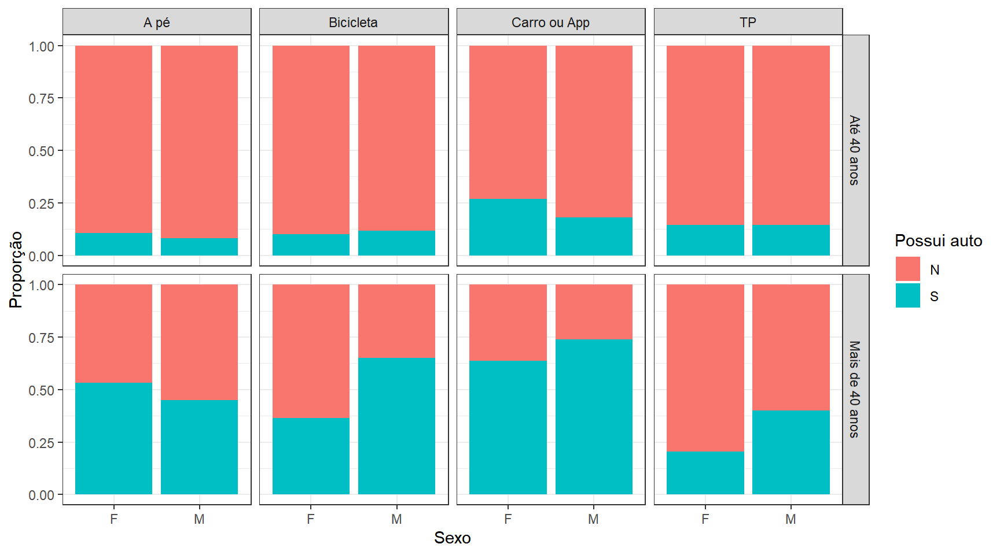
4.7.5 Duas numéricas e duas categóricas
O último caso combina o gráfico de dispersão com um grid completo de painéis, no qual uma variável categórica define as linhas e a outra define as colunas:
em |>
ggplot(aes(x = dist_viagem, y = tempo_viagem)) +
geom_point(alpha = 0.4) +
facet_grid(posse_auto ~ modo_viagem) +
labs(x = "Distância da viagem (km)", y = "Tempo de viagem (h)") +
theme_bw()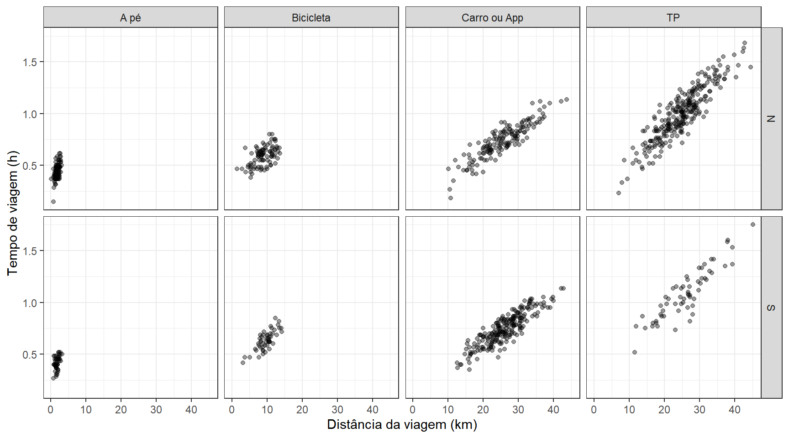
Alternativamente, uma das categóricas vai para a cor e apenas a outra permanece nos painéis, o que economiza espaço:
em |>
ggplot(aes(x = dist_viagem, y = tempo_viagem, color = posse_auto)) +
geom_point(alpha = 0.5) +
facet_grid(. ~ modo_viagem) +
labs(
x = "Distância da viagem (km)",
y = "Tempo de viagem (h)",
color = "Possui auto"
) +
theme_bw()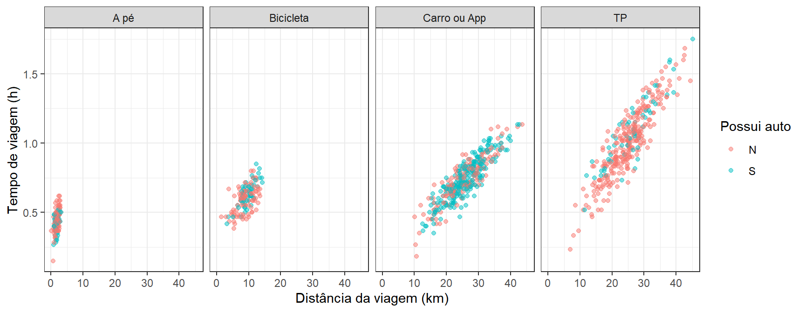
4.8 Refinando e salvando gráficos
Um mesmo gráfico pode receber mais de uma geometria. O caso mais frequente sobrepõe uma curva de densidade a um histograma, o que exige uma ressalva. O histograma desenha contagens no eixo vertical e a densidade desenha valores muito menores, de modo que as duas escalas são incompatíveis. A solução é pedir ao histograma que apresente densidade em vez de contagem, o que se faz com after_stat() dentro de aes():
em |>
ggplot(aes(x = renda)) +
geom_histogram(aes(y = after_stat(density)), binwidth = 500,
color = "black", fill = "gray80") +
geom_density(color = "#4D48B2", linewidth = 1) +
labs(x = "Renda (R$)", y = "Densidade") +
theme_bw()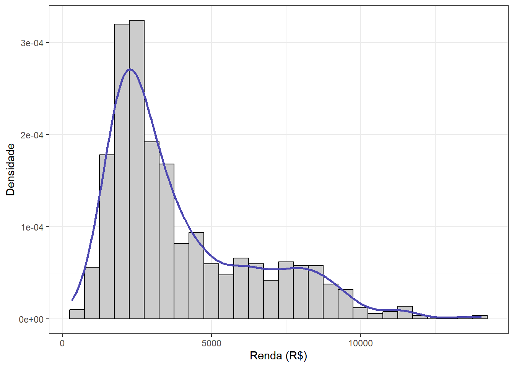
O exemplo ilustra também onde declarar o mapeamento estético. O que aparece dentro de aes() na chamada a ggplot() vale para todas as geometrias do gráfico, e é o caso de x = renda acima. O que aparece dentro de aes() em uma geometria específica vale apenas para ela, e é o caso de y = after_stat(density), que se aplica somente ao histograma. Essa distinção é útil quando geometrias diferentes precisam de mapeamentos diferentes.
Por fim, gráficos costumam sair do R para relatórios, artigos e apresentações. A função ggsave() exporta o último gráfico produzido, ou um gráfico armazenado em um objeto, com controle sobre dimensões e resolução:
grafico_renda <- em |>
ggplot(aes(x = renda)) +
geom_histogram(binwidth = 500, color = "black", fill = "gray70") +
labs(x = "Renda (R$)", y = "Frequência") +
theme_bw()
ggsave("histograma_renda.png", plot = grafico_renda,
width = 16, height = 10, units = "cm", dpi = 300)Os argumentos width e height definem as dimensões na unidade indicada em units, e dpi define a resolução em pontos por polegada. Para publicação impressa, 300 dpi é o valor usualmente exigido. O formato de saída é deduzido da extensão do nome do arquivo, o que permite gerar .png, .jpg, .pdf ou .svg sem argumentos adicionais.
4.9 Exercícios
Antes de iniciar os exercícios, baixe os arquivos abaixo para uma pasta onde você irá processá-los. Crie um projeto do R dentro dessa pasta e um novo script .R dentro desse projeto para responder às questões abaixo.
Leia o arquivo
velocidades.xlsx, armazene-o em um objetovele convertafaixaetipo_veicpara factor. Construa um histograma da variávelvelocidadecom classes de 5 km/h, com contorno preto e preenchimento cinza, rótulos em português nos dois eixos e um tema à sua escolha.Ainda com a base
vel, construa um boxplot da variávelvelocidade. Em seguida calcule no R o primeiro quartil, o terceiro quartil, o intervalo interquartil e os limites \(Q_1 - 1{,}5 \cdot IQR\) e \(Q_3 + 1{,}5 \cdot IQR\). Verifique se existem outliers e, em caso afirmativo, em qual das caudas eles se encontram.Construa um gráfico de barras horizontal com a contagem de observações por
tipo_veic. Produza o mesmo gráfico de duas maneiras, uma diretamente da base completa comgeom_bar()e outra a partir de uma tabela agregada comcount()egeom_col().Compare a distribuição da velocidade entre os tipos de veículo usando um boxplot agrupado. Em seguida produza a mesma comparação com curvas de densidade sobrepostas. Qual das duas representações você considera mais adequada para essa comparação, e por quê?
Na base
vel, cruzefaixaetipo_veicem um gráfico de barras agrupadas, primeiro em frequência absoluta e depois em frequência relativa dentro de cada faixa. Atenção ao agrupamento necessário para o cálculo das proporções.Usando a base
emdeste capítulo, construa um gráfico de dispersão entreidadeerenda, mapeando o modo de viagem à cor dos pontos e a posse de automóvel aos painéis. Ajuste a transparência dos pontos e escreva uma frase interpretando o padrão observado.Retome o gráfico da questão anterior e escolha uma codificação alternativa para a variável
modo_viagem, usando forma em vez de cor. Compare os dois resultados à luz da hierarquia de percepção discutida na Seção 4.2 e justifique qual deles comunica melhor a informação.Escolha o gráfico que você considerou mais informativo entre todos os que produziu nesta lista e exporte-o com
ggsave()em formato.png, com 16 cm de largura, 10 cm de altura e resolução de 300 dpi.
Coloquialmente conhecido como gráfico de pizza↩︎
Cleveland & McGill (1985) conduziram experimentos controlados medindo o erro cometido por participantes ao estimar quantidades codificadas por diferentes elementos visuais, e obtiveram uma ordenação estável entre eles. Vinte e cinco anos depois, Heer & Bostock (2010) repetiram esses experimentos recorrendo a uma plataforma de trabalho colaborativo pela internet, o que lhes permitiu recrutar um conjunto de participantes muito maior e mais heterogêneo do que era viável em laboratório. Os resultados anteriores foram reproduzidos, e o estudo ainda os estendeu a codificações não contempladas originalmente, como a área de retângulos.↩︎
do inglês, Grammar of Graphics↩︎